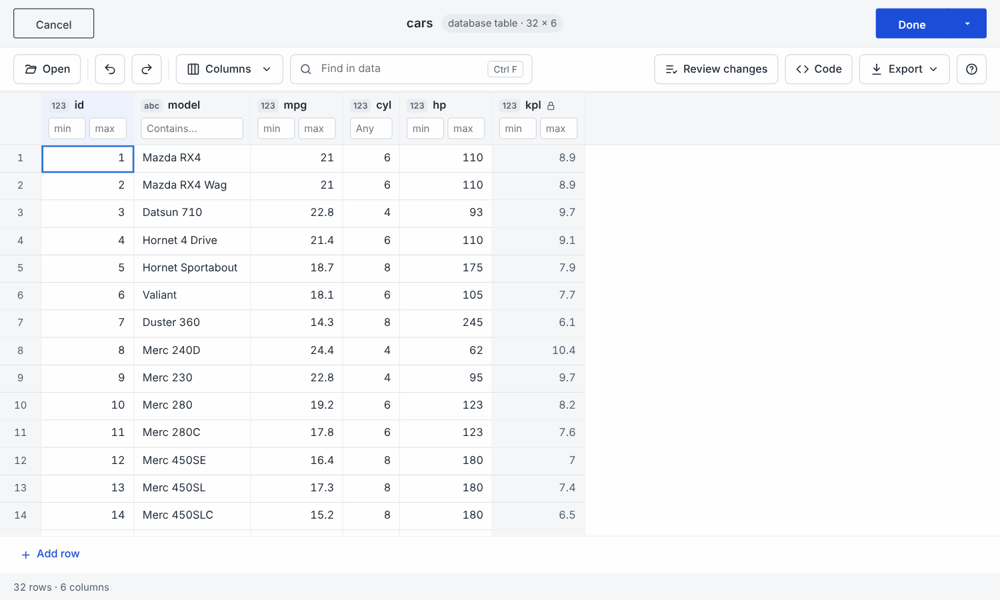
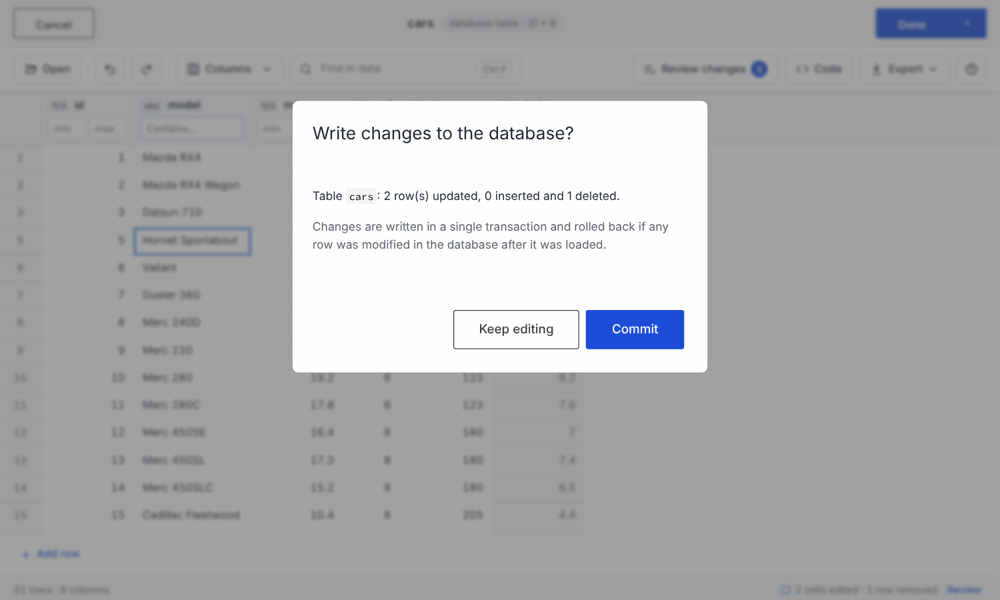
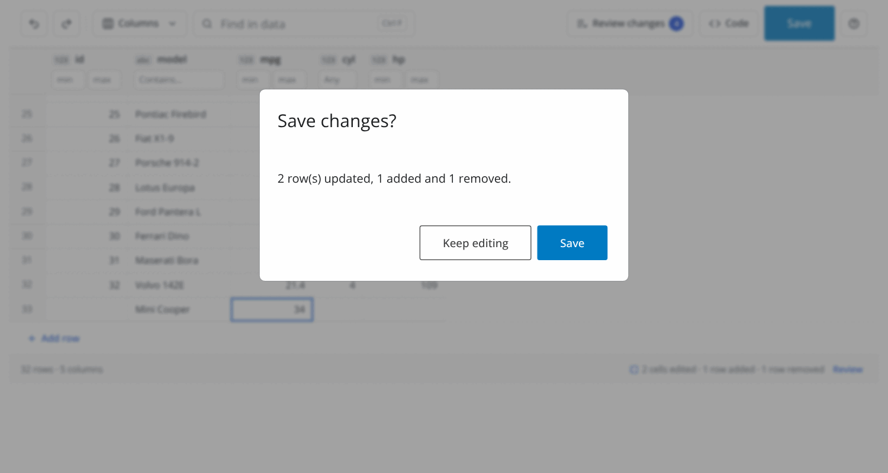

DataEditR can edit tables stored in a database as
easily as data in your R session. You connect with DBI, pass a dbplyr lazy table to
data_edit(), and the editor loads the rows, lets you edit
them with all the usual tools, and writes your changes back to the
database in a single transaction when you are done.
1. Connect to a database
Any database with a DBI backend can be used. A few
common examples are shown below; see the documentation of each backend
for the connection details it needs.
# SQLite - a database in a single file
con <- DBI::dbConnect(RSQLite::SQLite(), "cars.sqlite")
# DuckDB
con <- DBI::dbConnect(duckdb::duckdb(), "cars.duckdb")
# PostgreSQL
con <- DBI::dbConnect(
RPostgres::Postgres(),
dbname = "garage",
host = "db.example.com",
user = "me",
password = Sys.getenv("PGPASSWORD")
)
# MySQL or MariaDB
con <- DBI::dbConnect(RMariaDB::MariaDB(), dbname = "garage",
host = "db.example.com", user = "me",
password = Sys.getenv("MYSQL_PASSWORD"))
# SQL Server and other databases through ODBC
con <- DBI::dbConnect(odbc::odbc(), dsn = "garage")In this article we will use a small SQLite database created from
mtcars:
library(DataEditR)
library(dplyr)
con <- DBI::dbConnect(RSQLite::SQLite(), ":memory:")
DBI::dbExecute(con, "
CREATE TABLE cars (
id INTEGER PRIMARY KEY,
model TEXT,
mpg REAL,
cyl INTEGER,
hp INTEGER
)
")
#> [1] 0
DBI::dbAppendTable(con, "cars", data.frame(
model = rownames(mtcars),
mpg = mtcars$mpg,
cyl = as.integer(mtcars$cyl),
hp = as.integer(mtcars$hp)
))
#> [1] 322. Edit a table
Pass a lazy table created with dplyr::tbl() to
data_edit():
Use filter(), select() and
arrange() to choose the rows and columns to edit; only the
matching rows are loaded into the editor, so you can work on a small
part of a very large table. Columns calculated with
mutate() are shown for reference but are read-only (they
show a lock next to their name), because they do not exist in the
table.
cars <- tbl(con, "cars") %>%
filter(cyl >= 6) %>%
mutate(kpl = round(mpg * 0.425, 1))
data_edit(cars)
Everything else works as it does for data frames: edit cells, paste ranges, fill down, add or delete rows, undo and redo, filter rows under the column headers, review changes and revert them. Adding, removing and renaming columns is disabled, because that would change the structure of the table.
3. How rows are matched
Rows are matched to the database through the table’s primary
key. The key is detected automatically for SQLite, DuckDB and
databases that describe their keys in information_schema
(such as PostgreSQL). For other databases, or tables without a primary
key, use db_table() to say which column(s) uniquely
identify each row:
cars_db <- db_table(tbl(con, "cars"), key = "id")
cars_db
#> <editr_db_table>
#> table: cars
#> key: id
#> check: TRUEThe key columns must be part of the data you edit (don’t drop them
with select()), and their values must be unique in the
loaded rows.
db_table() also accepts a connection and a table name,
which is useful for tables in another schema or when you only want to
load the first rows of a large table:
# a table in another schema
data_edit(db_table(con, table = DBI::Id(schema = "sales", table = "orders"),
key = "order_id"))
# only load the first 1,000 rows
data_edit(db_table(con, table = "cars", key = "id", limit = 1000))Queries that combine tables, such as joins or unions, or raw SQL
queries cannot be written back automatically. Use
db_table() to say which table the edits belong to; columns
from other tables are then read-only:
4. Committing changes
Nothing is written to the database while you edit. When you press
Done, the editor shows a summary of the rows that will be
updated, inserted and deleted and asks you to confirm. Choose
Keep editing to go back to the editor or
Commit to write the changes. The Code panel
shows the rows_update(), rows_append() and
rows_delete() calls that make the same changes.


All changes are written in a single transaction, so either every change is saved or none are:
- edited rows are updated with
UPDATE ... WHERE <key> = ..., only setting the columns you changed; - removed rows are deleted by their key;
- new rows are inserted. If you leave the key of a new row empty the
database generates it (e.g. an auto-incrementing
id).
After a successful commit data_edit() returns the edited
rows as a data frame. Press Cancel to close the editor
without writing anything.
5. When someone else changes the data
Databases are often shared, so the rows you are editing may be
changed by someone else before you press Done. To make sure
you never overwrite their changes without knowing, every update checks
that the values you changed are still the values that were loaded, and
every delete checks that the whole row is unchanged (optimistic
concurrency). If any row was changed or removed in the meantime, the
whole commit is rolled back, nothing is written and you are told how
many rows conflicted. Close the editor, load the data again to see the
latest values and redo your edits.
If you would rather overwrite rows regardless of changes made by
others, turn the check off with check = FALSE:
6. Code to reproduce the changes
Set code = TRUE (or supply the name of an R script) to
get the dplyr code that makes the same changes to the
database with rows_delete(), rows_update() and
rows_append(). The Code tab in the editor
shows the same code as you edit.
library(dplyr)
cars <- tbl(con, "cars")
rows_delete(cars, tibble::tibble(id = c(4)), by = "id", unmatched = "ignore", copy = TRUE, in_place = TRUE)
rows_update(cars, tibble::tibble(id = c(1), mpg = c(21.5)), by = "id", unmatched = "ignore", copy = TRUE, in_place = TRUE)
rows_update(cars, tibble::tibble(id = c(2), model = c("Mazda RX4 Wagon")), by = "id", unmatched = "ignore", copy = TRUE, in_place = TRUE)
rows_append(cars, tibble::tibble(model = c("Ford Escort"), mpg = c(30.1), cyl = c(4)), copy = TRUE, in_place = TRUE)Tables in other schemas are referred to with
dbplyr::in_schema() in the generated code.
7. Databases in shiny apps
The dataEdit module edits database tables in your own
shiny applications too. Pass the lazy table (or a
db_table()) to dataEditServer() and call
dataEditCommit() when the user wants to save; it writes the
changes in a single transaction, raises an error of class
"editr_conflict" if rows were changed by someone else, and
reads the rows back from the database afterwards.
dataEditChanges() summarises what will be written, e.g. to
enable a Save button or ask for confirmation.
server <- function(input, output, session) {
cars <- dataEditServer("cars", data = tbl(con, "cars"))
observeEvent(input$save, {
res <- tryCatch(dataEditCommit(cars), editr_conflict = function(e) e)
if (inherits(res, "editr_conflict")) {
showNotification(conditionMessage(res), type = "error")
} else {
showNotification(sprintf("%d updated, %d added, %d removed",
res$updated, res$inserted, res$deleted))
}
})
}dataEditChanges() counts the rows that will be updated,
inserted and deleted, which makes it easy to enable a Save
button only when there is something to save, or to ask the user to
confirm:

See vignette("shiny-modules") for the complete app.